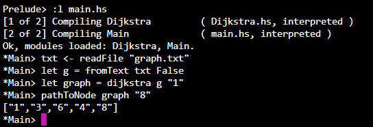

Implementación del algoritmo de Dijkstra
Es un algoritmo para la determinación del camino más corto, dado un vértice origen, hacia el resto de los vértices en un grafo que tiene pesos en cada arista.
Ambiente de programación
El programa fue desarrollado en un ambiente interpretado e interactivamente. Esto con la ayuda de la herramienta GHCi el cual permite evaluar expresiones de Haskell interactivamente. Haskell de igual manera permite la compilación de sus programas al generar ejectuables (.exe). El proceso para compilar un archivo (.hs) es muy similar a otros lenguajes. Se necesita tener el compilador instalado GHC y ejecutar:
ghc -o nombre-salida archivo.hsEsto generará un ejecutable con el nombre de salida.
Para generar un ambiente interactivo al momento de querer interpretar el código se requiere de ghci mencionado anteriormente y ejecutar:
ghci
Prelude> :l archivo.hs //Para CORRER un archivoAplicación
Desarrollar un programa que calcule la distancia más corta entre dos nodos de un grafo. El programa recibirá como entrada la especificación de un grafo (nodos y enlaces con peso, el nodo inicial y el nodo final). La salida del programa será la lista de nodos desde el inicial hasta el final y el peso de ese camino que debe ser el mínimo.
Entrada
El programa recibe como entrada un archivo de texto con 3 columnas indicando a los nodos junto con sus enlaces donde las primeras 2 columnas son los nodos involucrados y la tercera el peso del enlace.abnf
1 2 4
1 3 3
2 5 8
3 4 12
3 6 4
4 7 20
4 8 15
4 6 2
5 7 17
6 8 22
7 8 9Salida
El programa cuenta con las funciones para poder utilizar GHCi con el objetivo de poder consultar varias rutas a distintos nodos finales.
ghci
Prelude> :l main.hs //Compilar
Prelude> txt <- readFile "graph.txt" //Leer archivo del grafo
Prelude> let g = fromText txt False //Almacenar un pseudo-grafo NO dirigido a partir del texto
Prelude> edgesFor g "1" //Imprimir los enlaces del nodo "1"
Prelude> let graph = dijkstra g "1" //Utilizar el algoritmo para conocer las rutas a partir del nodo "1"
Prelude> pathToNode graph "8" //Imprimir la ruta más corta desde "1" hasta "8"Código
El código cuenta con listas dinámicas como estructuras de datos utilizadas y son proporcionadas por el paquete de haskell. Así como también cuenta con las clases de Graph, Edge, Node DNode.
module Dijkstra
(
fromText,
dijkstra,
pathToNode,
edgesFor,
Edge(..),
Node,
Graph,
Dnode
) where
import Data.List
data Edge = Edge { node::Node, weight::Float } deriving (Show)
type Node = String
type Graph = [(Node, [Edge])]
type Dnode = (Node, (Float, Node))
fromText :: String -> Bool -> Graph
fromText strLines isDigraph =
let readData [n1, n2, w] = ((n1, n2), read w :: Float)
es = map (readData . words) $ lines strLines
allEs = if isDigraph then es
else appendReversed es
in fromList allEs
appendReversed :: [((String, String), Float)] -> [((String, String), Float)]
appendReversed es = es ++ map (\((n1,n2),w) -> ((n2,n1),w)) es
fromList :: [((String, String), Float)] -> Graph
fromList es =
let nodes = nub . map (fst . fst) $ es
edgesFor es node =
let connected = filter (\((n,_),_) -> node == n) $ es
in map (\((_,n),wt) -> Edge n wt) connected
in map (\n -> (n, edgesFor es n)) nodes
edgesFor :: Graph -> Node -> [Edge]
edgesFor g n = snd . head . filter (\(nd, _) -> nd == n) $ g
weightFor :: Node -> [Edge] -> Float
weightFor n = weight . head . filter (\e -> n == node e)
connectedNodes :: [Edge] -> [Node]
connectedNodes = map node
dnodeForNode :: [Dnode] -> Node -> Dnode
dnodeForNode dnodes n = head . filter (\(x, _) -> x == n) $ dnodes
dijkstra :: Graph -> Node -> [Dnode]
dijkstra g start =
let dnodes = initD g start
unchecked = map fst dnodes
in dijkstra' g dnodes unchecked
initD :: Graph -> Node -> [Dnode]
initD g start =
let initDist (n, es) =
if n == start
then 0
else if start `elem` connectedNodes es
then weightFor start es
else 1.0/0.0
in map (\pr@(n, _) -> (n, ((initDist pr), start))) g
dijkstra' :: Graph -> [Dnode] -> [Node] -> [Dnode]
dijkstra' g dnodes [] = dnodes
dijkstra' g dnodes unchecked =
let dunchecked = filter (\dn -> (fst dn) `elem` unchecked) dnodes
current = head . sortBy (\(_,(d1,_)) (_,(d2,_)) -> compare d1 d2) $ dunchecked
c = fst current
unchecked' = delete c unchecked
edges = edgesFor g c
cnodes = intersect (connectedNodes edges) unchecked'
dnodes' = map (\dn -> update dn current cnodes edges) dnodes
in dijkstra' g dnodes' unchecked'
update :: Dnode -> Dnode -> [Node] -> [Edge] -> Dnode
update dn@(n, (nd, p)) (c, (cd, _)) cnodes edges =
let wt = weightFor n edges
in if n `notElem` cnodes then dn
else if cd+wt < nd then (n, (cd+wt, c)) else dn
pathToNode :: [Dnode] -> Node -> [Node]
pathToNode dnodes dest =
let dn@(n, (d, p)) = dnodeForNode dnodes dest
in if n == p then [n] else pathToNode dnodes p ++ [n]
Capturas
